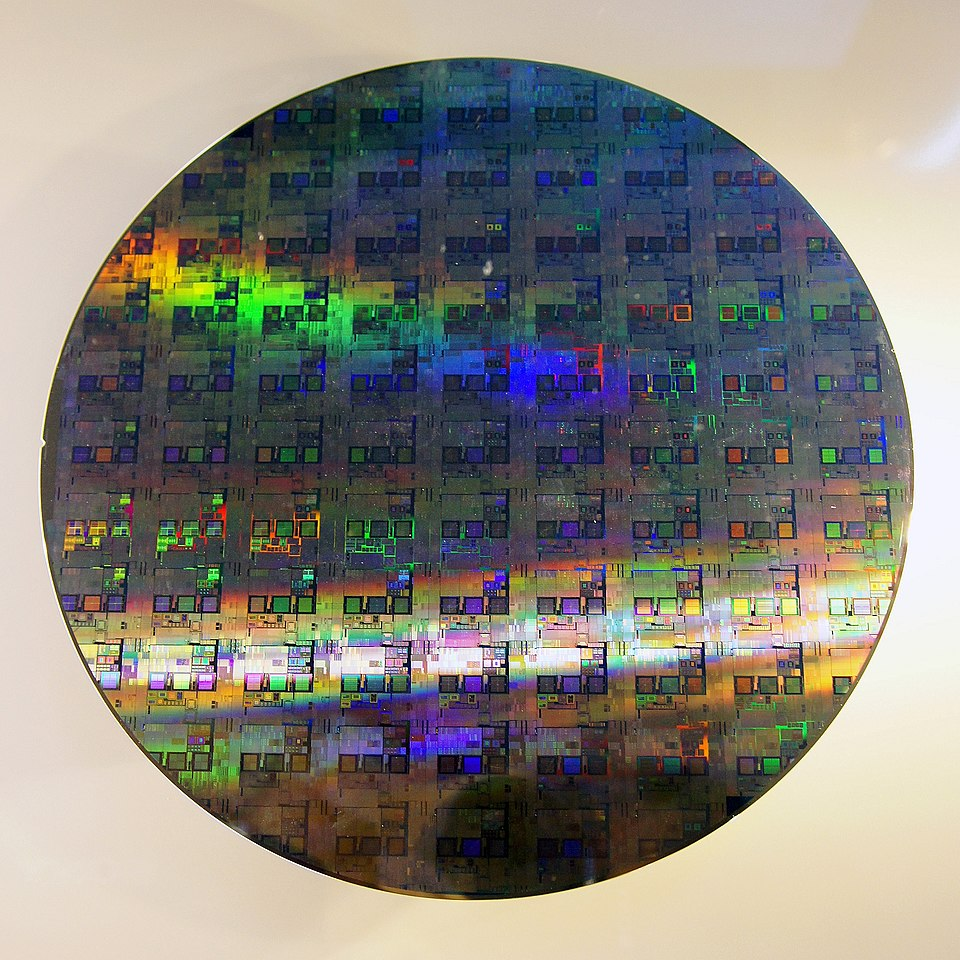

50 billion transistors. 3 to 5 nanometers wide. Switching billions of times per second, in lockstep. That's a modern processor — and the thing it actually does, underneath all the marketing, is breathtakingly simple.
We've spent three chapters building up to this moment. We know what bits are, how they exist physically, and how they represent every kind of information. Now it's time to ask what actually processes all those bits.
The answer is the Central Processing Unit, or CPU. And the first thing to understand about a CPU is that it doesn't do anything complicated. It executes instructions — one at a time, in sequence, at extraordinary speed. The complexity we experience as "computing" is nothing more than a very long sequence of very simple operations executed very fast.
The CPU's One Job: Fetch, Decode, Execute
Every CPU ever built — from the chip in a 1970s pocket calculator to the latest processor in a data center — operates on the same fundamental loop. It has three steps, and it repeats them for every single instruction a program contains.
Step one: Fetch. The CPU retrieves the next instruction from memory. It knows where to look because it maintains a register called the program counter — a pointer that always holds the memory address of the next instruction to execute.
Step two: Decode. The instruction arrives as a pattern of bits. The control unit interprets those bits to figure out what operation is being requested — is this an addition? A memory read? A comparison? — and prepares the relevant parts of the CPU to carry it out.
Step three: Execute. The operation happens. Numbers get added, memory gets read or written, comparisons get made. When it's done, the program counter advances to the next instruction, and the loop starts over.
That's it. Fetch, decode, execute. Every app you've ever used, every website you've ever visited, every video you've ever streamed — all of it reduced to this three-step loop, executing billions of times per second. We'll come back to this loop once we've covered what instructions actually look like — at that point the cycle will make much more sense stepped through with a real example.
Inside the CPU
The CPU isn't a monolith — it's a collection of specialized components that work together to execute that loop. The three main ones are worth knowing.
The Control Unit (CU) is the coordinator. It manages the fetch and decode steps, reads instructions from memory, interprets them, and orchestrates the rest of the CPU accordingly. It doesn't do math — it directs traffic.
The Arithmetic Logic Unit (ALU) is where computation actually happens. The ALU performs mathematical operations (addition, subtraction, multiplication) and logical operations (AND, OR, NOT, comparisons). When a program adds two numbers, that addition physically happens in the ALU, built from the transistors and logic gates we discussed in Chapters 2 and 3.
The Registers are the CPU's working memory — a small set of extremely fast storage locations that live directly on the processor chip. Registers hold the values the CPU is actively working with: the current instruction, the numbers being added, the result of a calculation. There are typically between 8 and 32 general-purpose registers in a modern CPU, each holding one word of data (32 or 64 bits). They're fast because they're right there on the chip — no waiting for data to travel from RAM.

Instructions: What the CPU Actually Executes
We've said the CPU "executes instructions," but what is an instruction, exactly? Let's be precise.
An instruction is a single, atomic command to the CPU — the smallest unit of work it can perform. A program written in Python or Java contains thousands of lines of human-readable code, but before it runs, a compiler or interpreter translates all of that into a sequence of binary instructions the CPU can actually execute. Each one is just a pattern of bits.
Every instruction has two parts. The opcode (operation code) is a group of bits at the start that encodes what to do — add, compare, jump to a different instruction, load data from memory. The operands are the remaining bits that encode what data to do it to — either the data itself, or the register or memory address where the data lives.
Modern CPUs support dozens or hundreds of different instruction types, but a handful of categories cover most of what a program actually does. Data movement instructions — MOVE, LOAD, STORE — copy data between registers, or between registers and memory. Arithmetic instructions like ADD, SUB, and MUL perform math on values held in registers, while logic instructions (AND, OR, NOT, XOR) do the same for individual bits. Comparison instructions such as CMP check two values and set flags in a status register that later instructions can read. Branch and jump instructions — JMP, JZ, JNE — change which instruction runs next, either unconditionally or based on those flags. This is how if statements and loops are implemented at the hardware level. And HALT stops execution entirely.
Every program you've ever run — every if statement, every loop, every function call — is ultimately compiled down into sequences of these simple instruction types. The ALU executes the arithmetic and logic instructions directly. The control unit handles data movement and branches. Together, they implement the full complexity of modern software from this tiny vocabulary.
Putting It Together: The FDE Cycle on a Real Program
Now that you know what instructions are — opcodes, operands, LOAD, STORE, ADD — the fetch-decode-execute cycle is worth seeing in action. The widget below compiles a three-line Python program into six assembly instructions and lets you step through every stage. Memory starts completely empty; every value is written by the program itself. Watch how the program counter, registers, and memory addresses change with each step.
A few things to notice. First, memory started blank — nothing exists until a STORE instruction puts it there. Python's a = 5 is not a declaration; it is an instruction that writes a value to a physical memory address. Second, the ALU never touched memory directly — data had to be LOADed into registers first, operated on, then STOREd back. Registers are the ALU's only workspace. Third, the program counter incremented by one for every instruction, stepping mechanically from 0x00 to 0x06. No instruction was skipped, reordered, or anticipated — just the loop, six times in a row.
Word Size
CPUs don't process data one bit at a time — that would be impossibly slow. Instead, they work with fixed-size chunks of bits called words. The word size is the natural unit of data the CPU processes in a single operation, and it matches the width of the CPU's general-purpose registers.
Modern CPUs are 64-bit, meaning their registers hold 64 bits at a time, they process 64-bit values in a single instruction, and memory addresses are 64 bits wide. This is why your operating system is called "64-bit Windows" or "64-bit Linux." Earlier systems were 32-bit — which is why 32-bit operating systems can only address about 4 GB of RAM (2³² bytes). On a 64-bit system, the theoretical address space is 2⁶⁴ bytes — about 18 exabytes. We won't be running out of that any time soon.
Logic Gates: From Transistors to Computation
We established in Chapter 2 that a transistor is an electrically controlled switch — on or off, representing 1 or 0, and that each transistor holds exactly one bit. How do you get from "a switch" to "an addition"?
The answer is logic gates. A logic gate is a small circuit built from two or more transistors that performs a logical operation on its inputs and produces a single output bit. Gates are the bridge between physical transistors and the logical operations the ALU needs to perform.
There are a handful of fundamental gate types. Each one has a well-defined rule — a truth table — that specifies what output it produces for every possible combination of inputs.
These four gates — NOT, AND, OR, XOR — plus one more called NAND (Not-AND, which outputs 0 only when both inputs are 1) are sufficient to build any digital circuit that can ever exist. This is not an overstatement. Every calculation your computer performs, every piece of data it stores, every comparison it makes — all of it can be reduced to combinations of these five gate types.
From Gates to Circuits: Building an Adder
A single gate is useful but limited. The real power emerges when you wire gates together into circuits. Let's trace exactly how addition happens inside the ALU — starting from individual bits.
Adding two single bits is simple. There are only four possible cases:
0 + 0 = 0 0 + 1 = 1 1 + 0 = 1 1 + 1 = 10 (binary for 2 — sum=0, carry=1)
Notice that 1 + 1 produces two output bits: a sum bit and a carry bit (the carry is what you "carry over" to the next column, just like carrying a 1 in decimal addition). A circuit that handles this is called a half adder, and it's built from exactly two gates. An XOR gate produces the sum bit — 1 when the inputs differ, 0 when they match. An AND gate produces the carry bit, which is 1 only when both inputs are 1. That's the whole circuit.
A full adder extends the half adder by also accepting a carry-in from the previous column — exactly as you carry digits in pencil-and-paper addition. A full adder is built from two half adders plus an OR gate. And here's the payoff: chain eight full adders together and you have an 8-bit adder — a circuit that can add any two 8-bit numbers and produce an 8-bit result with a carry-out. That is literally how your CPU's ALU adds numbers. The same principle scales to 32-bit and 64-bit adders.
You are now looking at the bottom of the stack. Transistors become gates. Gates become circuits. Circuits become an ALU. The ALU executes instructions. Instructions run your software. This chain — from physics to programs — is what Chapter 2 meant when it said "everything else is built on top of that."
Clock Speed
In Chapter 2, we introduced clock speed as the frequency at which a CPU's internal oscillator ticks. Let's unpack what that actually means for performance.
Each tick of the clock is an opportunity to complete one stage of the fetch-decode-execute cycle. A processor running at 3.0 GHz completes 3 billion ticks per second. With a simplified model where each instruction takes 3 clock cycles (fetch, decode, execute), that's roughly 1 billion instructions per second — though in reality, modern processors use pipelining and other tricks to approach much higher throughput.
So if clock speed is so important, why not just keep cranking it up? In the early 2000s, that's exactly what Intel and AMD were doing — racing past 1 GHz, 2 GHz, 3 GHz. Then around 2004, they hit a wall.
The problem is heat. Faster transistors switch faster, but they also dissipate more power as heat. Beyond roughly 4 GHz with conventional silicon, chips start generating so much heat that they become unreliable or outright melt. You can pour more power into a processor, but at some point it becomes a space heater that incidentally does some computing.
Cores: Width Over Speed
When the clock speed wall appeared, the industry's solution was to stop making one processor faster and start putting more of them on the same chip. Each processor — called a core — has its own control unit, ALU, and registers. A four-core chip has four independent fetch-decode-execute loops running simultaneously.
An independent processing unit within a CPU. Each core has its own control unit, ALU, and registers, and can execute instructions independently. A quad-core processor has four cores; an octa-core has eight.
This is the difference between making a single worker faster versus hiring more workers. Beyond a certain point, one faster worker doesn't help much — more workers in parallel do.
But there's a catch: not all work benefits equally from parallelism. Some tasks are inherently sequential — step B can't start until step A finishes. Running a spreadsheet calculation that depends on previous results, rendering a single video frame, or booting an operating system all have sequential dependencies that extra cores can't accelerate. Other tasks are embarrassingly parallel — rendering many video frames at once, serving thousands of simultaneous web requests, training an AI model across a large dataset — and scale beautifully with additional cores.
As an IT professional, this distinction matters when specifying hardware. A database server handling thousands of concurrent queries needs many cores. A developer's workstation running a single compile job cares more about single-core clock speed. There's no universally "best" processor — only the right processor for the workload.
Pipelining: The Assembly Line
In 1913, Henry Ford transformed automobile manufacturing with the moving assembly line. Instead of one worker building an entire car start to finish, he broke production into discrete stages — engine installation, wheel mounting, body painting — with each worker specializing in one stage. While one car was getting its wheels, the next car was getting its engine, and the one after that was getting its body. Multiple cars in production simultaneously, each at a different stage.
CPU designers had the same insight decades later. The fetch-decode-execute cycle has distinct stages. Why let a core sit idle during decode when it could already be fetching the next instruction?
Pipelining overlaps the execution stages of consecutive instructions. While instruction 2 is being decoded, instruction 3 is being fetched — and instruction 1 is executing. Multiple instructions are in-flight simultaneously, each at a different stage of the pipeline. The individual stages don't get faster, but the throughput — instructions completed per second — increases dramatically.
The Problem with Pipelining: Branch Instructions
Pipelining works beautifully when instructions run in a straight sequence. But programs are full of branches — if/else statements, loops, function calls — where the next instruction depends on a condition that hasn't been evaluated yet. When the pipeline fetches instruction 3 while instruction 1 is still executing, it doesn't yet know whether instruction 1 will result in a branch to a completely different part of the program. If it does, all the prefetched work gets thrown away.
Modern CPUs address this with branch prediction: sophisticated algorithms that guess which way a branch will go before it executes, and speculatively fetch and execute along the predicted path. If the prediction is correct (modern predictors are right over 95% of the time), execution continues without a hiccup. If wrong, the speculative work is discarded and the pipeline restarts — a costly pipeline flush.
This is one reason why clock speed alone doesn't predict real-world performance. Two chips at the same GHz can have very different throughput depending on pipeline depth, prediction accuracy, and how well the software's branch patterns cooperate with the predictor.
Cache: The Speed Bridge
Here's a problem. Modern CPUs can execute instructions at staggering speeds, but they need data and instructions to be fed to them continuously. If a core has to wait for data to arrive from main memory (RAM) every time it needs it, it sits idle — wasting billions of cycles.
The fundamental issue is the speed gap between a CPU and RAM. A CPU register can be read in a single clock cycle. Main memory takes hundreds of clock cycles to respond. That's like a chef who can plate a dish in one second but has to wait three minutes for an ingredient to arrive from a warehouse down the street every time they need something.
The solution is cache — a small, very fast pool of memory built directly onto the CPU chip. Cache stores copies of frequently used data and instructions so the CPU can access them quickly without waiting for RAM. It operates on a simple principle: if you needed something recently, you're likely to need it again soon (temporal locality), and if you needed data at one memory address, you'll probably need nearby addresses too (spatial locality).
A small, fast memory pool located on or near the CPU chip that stores frequently accessed data. Dramatically reduces the time the CPU spends waiting for data from main memory. Organized in levels (L1, L2, L3) by speed and size.
Cache is organized in levels — L1, L2, and L3 — each trading speed for size:
L1 cache is the smallest and fastest — typically 32–64 KB, accessible in a single clock cycle. There's usually one L1 cache per core. L2 cache is larger (256 KB–1 MB) and a few cycles slower, still per-core in most designs. L3 cache is shared across all cores on the chip — much larger (8–64 MB on modern desktop processors) but slower than L1 or L2.
When the CPU needs data, it checks L1 first. If the data isn't there (a cache miss), it checks L2, then L3, then finally RAM. Each level down is dramatically slower. A program with good cache locality — one that accesses memory in predictable patterns that cache can anticipate — can run several times faster than one that thrashes through random memory locations.
CPU Architectures: x86 vs. ARM
Everything we've discussed so far — fetch, decode, execute, cores, cache — is universal to all CPUs. But the specific instruction set a CPU understands varies by architecture. The two dominant families today are x86 and ARM, and as an IT professional you will encounter both constantly.
An instruction set architecture (ISA) is the complete vocabulary of instructions a CPU can execute — the specific binary patterns it recognizes and the operations they trigger. Think of it as the CPU's native language. Software compiled for x86 won't run natively on an ARM processor, any more than a book written in French can be read by someone who only speaks Japanese.
x86 (and its 64-bit extension, x86-64 or AMD64) is the architecture behind virtually every desktop PC, laptop, and server for the past four decades. Intel and AMD are the two manufacturers. It's a CISC architecture — Complex Instruction Set Computing — meaning it has a large, rich vocabulary of instructions, some of which do quite a lot of work in a single step. This makes it powerful but relatively power-hungry.
ARM takes the opposite philosophy. It's a RISC architecture — Reduced Instruction Set Computing — with a smaller, simpler vocabulary of instructions. Simpler instructions mean simpler circuits, which means lower power consumption and less heat. For decades ARM dominated mobile and embedded devices for exactly this reason — your phone's processor has always been ARM.
What's changed recently is that ARM has arrived in territory that used to belong exclusively to x86. Apple's M-series chips — powering every Mac since 2020 — are ARM-based and deliver performance that matches or beats x86 chips at a fraction of the power draw. Major cloud providers now offer ARM-based server instances (AWS Graviton, for example) at lower cost per unit of compute. This is not a niche development — it's a fundamental shift in the server market that IT professionals need to understand.
Measuring Performance: MIPS, FLOPS, and Benchmarks
Clock speed and core count are marketing numbers. They don't tell you how fast a processor will actually run your workload. For that, you need performance metrics — and an understanding of what they do and don't measure.
MIPS (Millions of Instructions Per Second) measures how many instructions a processor completes per second. It sounds simple, but it's slippery: not all instructions take the same time, and a RISC chip executing 1,000 simple instructions may accomplish the same work as a CISC chip executing 100 complex ones. MIPS comparisons are only meaningful between chips with the same instruction set.
FLOPS (Floating-Point Operations Per Second) measures specifically floating-point arithmetic — the kind used in scientific simulation, 3D graphics, machine learning, and video processing. Modern GPUs are rated in teraFLOPS (trillions of floating-point operations per second) because those workloads are exactly what they're designed for. When a cloud provider advertises a GPU instance for AI training, they'll quote FLOPS.
| Metric | Stands For | What It Measures | Best For |
|---|---|---|---|
| MIPS | Millions of Instructions/sec | Integer instruction throughput | General compute comparison (same ISA) |
| MFLOPS | Millions of Floating-Point ops/sec | Floating-point throughput | Scientific, financial, graphics workloads |
| GFLOPS | Billions of FP ops/sec | Same, larger scale | GPU benchmarking, AI inference |
| TFLOPS | Trillions of FP ops/sec | Same, larger scale | AI training, HPC |
The most honest measure of CPU performance is a benchmark — a standardized test that runs a realistic workload on the processor and measures actual throughput, latency, or both. Benchmarks can be synthetic (a constructed test designed to stress specific components) or real-world (running actual applications). Sites like PassMark, Cinebench, and Geekbench publish benchmark scores for hundreds of CPUs, and they're far more useful than spec sheet numbers when making purchasing decisions.
Reading a CPU Spec Sheet
Everything in this chapter comes together when you're staring at a CPU specification and need to make a purchasing decision. Let's decode a realistic example.
A few terms from this spec sheet deserve extra attention. Base clock is the sustained speed the chip runs at indefinitely. Boost clock is the maximum speed it can reach for short bursts when temperatures allow — the chip throttles back if it gets too hot. TDP (Thermal Design Power) measures heat output in watts and determines what cooling solution you need. A 125W TDP chip in a server rack is an entirely different thermal problem than a 15W laptop chip — both factors matter when you're specifying hardware for a real environment.
The "8P + 8E" notation on this chip's core count reflects a newer design trend: heterogeneous cores. Performance cores (P-cores) are large, fast, and power-hungry, designed for demanding tasks. Efficiency cores (E-cores) are smaller and slower but use a fraction of the power, handling background work. The operating system decides which workload goes where. This is now common in both Intel and Apple Silicon designs.
Moore's Law and the Future of the CPU
In 1965, Gordon Moore — co-founder of Intel — observed that the number of transistors on a chip was doubling approximately every two years, with no increase in cost. This observation, dubbed Moore's Law, turned out to be a remarkably accurate prediction for over five decades.
The implications were staggering. If transistor count doubles every two years at constant cost, then compute power doubles every two years for the same price. The Intel 4004 processor from 1971 had 2,300 transistors. A modern Apple M3 has over 25 billion. That's roughly 11 million times as many transistors in about 50 years — an almost incomprehensible compounding of capability.

Moore's Law has two important companions. Rock's Law (named for Arthur Rock, an early Intel investor) observes that the cost of a chip fabrication facility doubles roughly every four years. A state-of-the-art fab today costs over $20 billion to build — so much that only a handful of companies in the world (TSMC, Samsung, Intel) can afford to operate them.
And Moore's Law itself is slowing. At 3–5 nanometer transistor sizes, we're approaching physical limits — transistors so small that quantum effects like electron tunneling cause unpredictable behavior. The doubling cadence has stretched from every 2 years to every 3–4 years. The industry has compensated with architectural innovations (better pipelines, heterogeneous cores, chiplets) and by expanding into 3D stacking — building transistor layers vertically rather than packing them tighter horizontally. But the era of "just shrink the transistor and double the performance" is largely over.
Beyond the CPU: GPUs and TPUs
Everything in this chapter has described a general-purpose CPU — a processor designed to run any kind of sequential computation quickly. But not all problems are sequential, and not all workloads benefit from the CPU's architecture. Two specialized processor types have become essential to modern computing: GPUs and TPUs.
GPUs: Massive Parallelism
A Graphics Processing Unit was originally designed to render images. Rendering a frame means computing the color of millions of pixels simultaneously — each pixel's calculation is independent of the others, so there's no reason to do them one at a time. A CPU with 16 high-performance cores can tackle 16 things at once. An NVIDIA H100 GPU has over 16,000 smaller cores operating simultaneously.
The tradeoff is specialization. A GPU core is far simpler than a CPU core — no deep pipeline, no branch prediction, no out-of-order execution. It's optimized for one thing: performing the same simple arithmetic operation on a large array of numbers in parallel. For that task, it is orders of magnitude faster than a CPU. For most other tasks, the CPU wins.
This same strength turns out to be exactly what modern AI needs. Training a neural network reduces to enormous numbers of matrix multiplications — exactly the kind of embarrassingly parallel arithmetic a GPU excels at. That's why GPU clusters power virtually every AI training workload today. The hardware existed; the workload arrived.
TPUs: Even More Specialized
A Tensor Processing Unit takes specialization further. Google designed the TPU in 2016 specifically to accelerate the matrix multiplications that neural networks require — it doesn't even try to be a general-purpose chip. Where a GPU is versatile enough to run games, simulations, and video processing as well as AI, a TPU does essentially one thing: multiply large matrices of numbers together as fast as physically possible.
The payoff is efficiency. For AI training and inference workloads, TPUs deliver more computation per watt than a GPU, at lower cost per operation at scale. Google's internal AI workloads — Search, Translate, Maps, Gmail — all run on TPUs. Cloud providers now offer TPU instances alongside GPU and CPU instances, and choosing among them is a real infrastructure decision for AI-heavy applications.
| Processor | Core count | Strength | Weakness | Typical use |
|---|---|---|---|---|
| CPU | 4–128 | Sequential tasks, complex logic | Slow at massive parallelism | Operating systems, general software |
| GPU | 1,000s | Parallel math, graphics | Inefficient for sequential work | Rendering, AI training, simulations |
| TPU | Custom matrix units | Neural network math | Only useful for ML workloads | AI training and inference at scale |
The broader point is architectural: the right processor depends entirely on the workload. A CPU running a database handles thousands of independent queries — parallelism matters, but so does complex branching logic. A GPU rendering a game frame runs millions of nearly-identical shader calculations in lockstep. A TPU training a language model multiplies billion-element matrices over and over. Same underlying physics, radically different designs optimized for different problems.